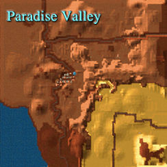
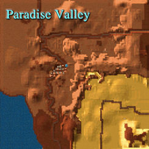

Marks

Version 2.0 is the most powerful mm6 walkthrough, included all maps of towns/dungeons, locates of
treasures/keys/quest items, and repaired many minor bugs. All pictures, descriptions, tablings was rebuilt for
better avail and design.
I send my best greets to original walkthrough maker: Mark Marcelais.
J. Pike


 
